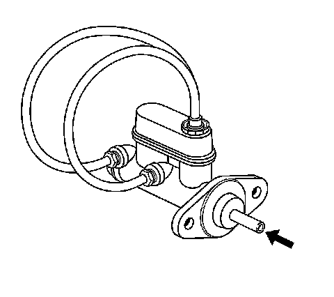

Master Cylinder Bench Bleeding
Master Cylinder Bench Bleeding
Caution: Refer to Brake Fluid Irritant Caution (Brake Fluid Irritant Caution) .
Notice: Refer to Brake Fluid Effects on Paint and Electrical Components Notice (Vehicle Damage Warnings) .
Notice: When adding fluid to the brake master cylinder reservoir, use only Delco Supreme 11(R), GM P/N 12377967 (Canadian P/N 992667), or equivalent DOT-3 brake fluid from a clean, sealed brake fluid container. The use of any type of fluid other than the recommended type of brake fluid, may cause contamination which could result in damage to the internal rubber seals and/or rubber linings of hydraulic brake system components.

1. Secure the mounting flange of the brake master cylinder in a bench vise so that the rear of the primary piston is accessible.
2. Remove the master cylinder reservoir cap and diaphragm.
3. Install suitable fittings to the master cylinder ports that match the type of flare seat required and also provide for hose attachment.
4. Install transparent hoses to the fittings installed to the master cylinder ports, then route the hoses into the master cylinder reservoir.
5. Fill the master cylinder reservoir to at least the half-way point with Delco Supreme 11(R), GM P/N 12377967 (Canadian P/N 992667), or equivalent DOT-3 brake fluid from a clean, sealed brake fluid container.
6. Ensure that the ends of the transparent hoses running into the master cylinder reservoir are fully submerged in the brake fluid.
7. Using a smooth, round-ended tool, depress and release the primary piston as far as it will travel, a depth of about 25 mm (1 in), several times. Observe the flow of fluid coming from the ports.
As air is bled from the primary and secondary pistons, the effort required to depress the primary piston will increase and the amount of travel will decrease.
8. Continue to depress and release the primary piston until fluid flows freely from the ports with no evidence of air bubbles.
9. Remove the transparent hoses from the master cylinder reservoir.
10. Install the master cylinder reservoir cap and diaphragm.
11. Remove the fittings with the transparent hoses from the master cylinder ports. Wrap the master cylinder with a clean shop cloth to prevent brake fluid spills.
12. Remove the master cylinder from the vise.